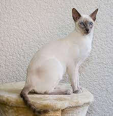

GATO SIAMES

El siamés es una raza de gato. Dentro de dicha raza se distinguen
dos variedades: por un lado el siamés moderno, y por otro el siamés tradicional o Thai.
Deriva del Siamés tradicional, una de las diversas variedades de
gatos nativos de Tailandia (antiguamente conocida como Siam), el siamés original se convirtió en una de las razas más populares en Europa y Norteamérica en el siglo xix.1? El siamés moderno,
más refinado y de rasgos más extremos, se caracteriza por unos ojos azules almendrados, una cabeza triangular, orejas grandes, un cuerpo alargado, esbelto y musculoso, y varias formas
de coloración de puntos. Aparte de la coloración, el siamés de estilo moderno tiene poco parecido con el original, y el siamés más moderado, tradicional o de "estilo antiguo",
con una cabeza y cuerpo mucho más redondeados, ha sido restablecido por múltiples registros como siamés tradicional. La Asociación Internacional de Gatos describe al siamés
moderno como cariñoso, sociable, inteligente y juguetón hasta la edad adulta, a menudo disfrutando de un juego de la "búsqueda".2?Los siameses tienden a buscar la interacción humana y
también les gusta la compañía de otros gatos.
El siamés (a veces en su forma tradicional) forma parte de la «raza base»
de otras razas desarrolladas mediante «cruces» con otros gatos; algunos ejemplos son el Gato oriental y el Colorpoint de pelo corto, desarrollados para ampliar la gama de patrones
de pelaje; la variante de pelo largo más conocida como Himalayo; y las razas de pelo mutado, como el Cornish Rex, el Sphynx, el Peterbald y el gato siamés de punta azul. El gato
siamés se presenta en dos variantes distintas: el tradicional, con cabeza redondeada (aunque no tan redondeada como la posterior mezcla americana Apple-head) y cuerpo ligeramente regordete;
o el siamés moderno, que es muy delgado y tiene la cabeza en forma de cuña. El siamés de pelo largo es reconocido internacionalmente como gato balinés. Los gatos siameses
son una de las razas más comunes que tienen iris no blancos.